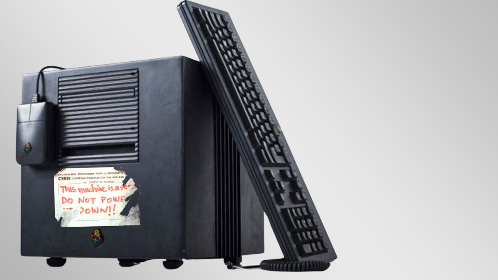
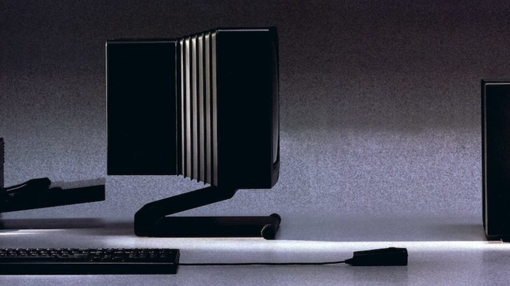
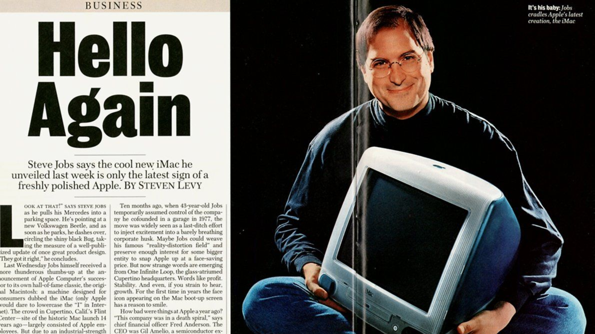

A saída da Apple
Apesar da notoriedade com que conhecemos Steve Jobs o seu lado explosivo e inconveniente para com a equipe. Sculley, ex executivo da Pepsi e representante do conselho favoreceu a “renúncia” de Jobs do cargo após quase uma década à frente da Apple. Com a promessa de fundar a própria empresa, acompanhado de alguns ex-funcionários da Apple e com um investimento de US$12 milhões do bolso de Jobs, surgiu então em 1985 a Next. Segundo Steve, o principal objetivo da Next era atender a área de pesquisa e o setor corporativo, produzindo tanto o hardware quanto software e deixando de fora os consumidores genéricos. A ideia surgiu após um encontro com Paul Berg, reitor da Universidade de Stanford, que citou a necessidade de máquinas com um menor custo para testes de pesquisa.

O Next Computer
Foi então que em 1988, surgiu o Next Computer, primeiro lançamento da empresa com a promessa da elegância incorporada através do gabinete preto, bem diferente do que era comercializado na época. Com uma CPU Motorola 68030 e velocidade de 25 MHz, possuia 8MB de RAM e uma unidade magneto-óptica de 256 MB. Além da opção de expandir a memória para 64MB e variações de unidade de disco de 330 e 660 MB.
O sistema NeXTSTEP
O sistema operacional recebeu o nome de NEXTSTEP e foi criado com base no kernel Mach e BSD e inspirado no UNIX. Não possui tela colorida e com uma interface multitarefas que facilitava a manipulação de imagens, gráficos, janelas, proporcionando uma experiência visual avançada e atraente para o usuário final, algo fundamental nos softwares atuais e principalmente para o público alvo da Next.

Segunda geração
Apesar do resultados abaixo do esperado, Jobs iniciou a tentativa de vendas Next Computer para o mercado internacional e lançou a segunda geração de computadores denominados Next Station e Next Cube com alterações significativas como expansão de memória RAM para até 128 MB, processadores que chegavam até 30 MHz e a tela colorida.
O fracasso da Next
Apesar de um feedback positivo sobre o sistema operacional tanto dos usuários quanto da IBM - que chegou a licenciar o NeXTSTEP para uso interno - a Next não teve bons resultados financeiros e vendeu apenas 50.000 computadores e em 1993 repassou seu estoque físico para a Canon. Resultado justificado pelo alto custo de venda das máquinas: $6.500 cerca de 16.300 dólares.
